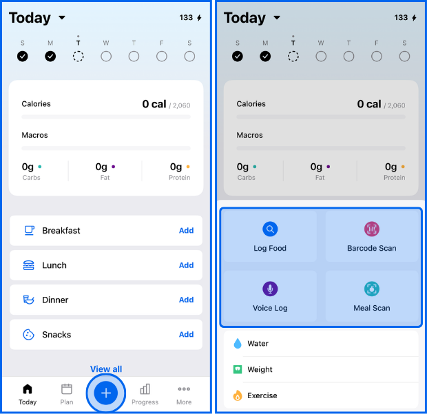
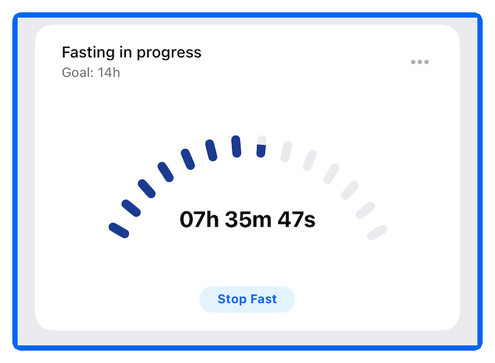

用了三年 MyFitnessPal：这八个能力域我替你盘一遍
从记食录入到断食追踪，从周报解读到设备同步，一篇把这款卡路里记账工具的能力边界、免费与会员的差距、适合谁用说清楚。
MyFitnessPal 到底是个什么？简单说，它是健身圈里最老牌的卡路里记账工具之一——官网至今还挂着那句 "track your food, lose weight, feel great" 的老口号，打开应用记一餐、扫一下包装食品、跟着断食计时器掐点吃饭，这些场景里它几乎是默认选项。但大多数人只用到了它记食物的那一小部分，更深的能力藏在几个不太显眼的角落。
我自己用了三年，从单纯记卡路里到用它管理断食节奏、导出数据做自定义分析，逐渐意识到这款应用的价值远不止"每天吃了多少卡"这么简单。下面我按能力域把它完整盘一遍，每个域讲清楚它能做什么、亮点在哪、什么情况下你会真的用得上。
记食录入：三种姿势覆盖 90% 场景
记食是 MyFitnessPal 的基本功，也是它做得最成熟的一块。应用的最新安装包从MyFitnessPal下载就能拿到，装好后官方给了三种录入方式，覆盖了绝大多数日常场景。
最省心的是条码扫描。2022 年之后这项功能变成会员专属，但包装食品扫一下直接带出营养数据，几秒就能入账——对于吃预包装食品多的人来说，这个效率提升是实实在在的。扫码扫不到也不稀奇，新上市或地区性商品不在社区数据库里，改搜索就行。社区共建的食物库是它的一大资产，条目数量和准确度在同类应用里算领先。
散装饭菜靠拍餐识别。拍一张盘子的照片，应用会识别里面的食材和份量，自动估算卡路里。这个功能同样需要会员，识别精度取决于照片质量——光线足、摆盘清楚的时候准确率很高，汤汁多或食材混杂的菜就容易偏差。
最基础的搜索录入反而不能轻视。自建食物条目、复制昨天的餐次、多日一次性补记，这些进阶操作都在搜索框旁边。出差三天忘了记账？会员的多日记录可以一次补上，数据直接计入对应日期的账，不影响周统计。

数字解读：单日是读数，多日才是判断
记了一堆数字但不会看，等于白记。Progress（进度）页是 MyFitnessPal 所有"看趋势"功能的集中地，2026 年改版后结构更清晰了。
关键的设计是日视图和周视图的切换。卡路里、宏量营养素（碳水蛋白质脂肪）、微量营养素、体重围度、睡眠——每个维度都能按日或按周来看。单日数字是读数，会被水分、肠道内容物、运动消耗这些因素上下波动 300 卡都正常；周平均才是执行质量的真正标尺。
会员在这里的优势拉开了：周报不限量回看任意一周、食物分析（自动列出这周吃得最多/最不健康的食物清单）、餐级明细导出——这些是数据党真正想要的东西。配合电子表格做自定义分析，是不少会员的进阶玩法。
官方社区长期验证的三个趋势读法值得记住：周平均热量比单日重要、体重看周均线不看单日、任何饮食调整至少观察两到三周的周平均再下结论。这三条听起来简单，但能执行到位的人不多——Progress 页存在的意义就是给你提供这个观察窗口。
断食追踪：三种模式随时切换
间歇性断食这几年越来越流行，MyFitnessPal 内置了完整的断食计时器，而且三种模式的选择逻辑被官方写得很清楚。
目前支持的三种模式：12:12（12 小时断食 / 12 小时进食）、14:10、16:8。关于每种模式的窗口计算和注意事项，MyFitnessPal文档里有详细对照。新手官方建议从 12:12 起步——晚饭后到次日早饭前自然就有 12 小时空窗，几乎不改变生活方式，先把"掐着表吃"这个习惯建立起来。形成节律后再往 14:10、16:8 升档，设置里随时可以切换。
16:8 的窗口位置没有标准答案。有人中午 12 点开窗晚 8 点关（跳过早餐），有人早 10 点开晚 6 点关（兼顾社交晚餐），能长期执行的那个就是对的。
但要注意两条纪律：断食窗不等于免票窗，进食窗内的营养质量仍是胜负手；配合按餐目标更好用——跳过早餐的人把早餐目标设为 0，读数才不会误导。孕期哺乳期、糖尿病用药人群、有进食障碍史的人，任何形式的断食方案都应先跟医生确认。

目标管理：从总卡路里到按餐分配
MyFitnessPal 的目标设置比看起来要细致。大多数人只设一个每日总卡路里，但往下挖会发现宏量营养素比例、按餐分配、体重记录这些都是独立可调的。
宏量目标的设置逻辑很实用：先确定每日总卡路里，再按比例分配碳水、蛋白质、脂肪。健身人群常用的 4:3:3（碳水:蛋白:脂肪）或 3:4:3 生酮向调整，都能在设置里直接改。
按餐目标是被低估的一个功能。如果你习惯跳过早餐，把早餐的宏量目标设为 0，那一天的目标会自动重新分配到午餐和晚餐，读数就不会出现"早餐没吃差 400 卡"这种误导性的提示。
体重记录和卡路里追踪要分开看。单日体重波动可以有两三斤，受水分、肠道内容物、甚至前一天吃的盐量影响极大。周均线才是判断趋势的可靠指标——MyFitnessPal 的体重曲线默认显示周均，这个设计本身就是在帮你过滤噪音。
设备与应用连接：生态集成是加分项
MyFitnessPal 和市面上主流健身设备、健康应用的连接做得相当完善。Apple Health、Google Fit、Garmin、Fitbit、Oura Ring、Whoop——打开 Connect 页面能看到一长串可连接的设备。
连接之后的自动同步能省不少事。比如你戴着 Garmin 手表跑了五公里，运动消耗的卡路里会自动回填到当日日记的运动项里，总卡路里目标会相应上调，你不用手动估算也不用来回在两个应用之间切换。
但生态集成也有它的边界。连接是单向的多，双向的少——MyFitnessPal 能读取其他设备的数据，但你的饮食记录不会自动同步到 Garmin 或 Oura 那边。如果你用多个健康应用，数据孤岛的问题还是存在，需要手动在各平台之间对齐。
一些不得不说的短板
盘点优势的同时也要讲局限。
首先是会员门槛。条码扫描、拍餐识别、周报不限量回看、多日补记、食物分析、数据导出——这些真正提升效率的功能几乎全部锁在 Premium 会员后面。免费版能用，但体验差距不小，尤其是记食效率上。
其次是Android 平台的功能灰度问题。官方帮助中心明确承认，部分安卓用户暂时看不到周起始日设置、某些订阅功能按钮会延迟显示，属于逐步推送中的灰度问题。国内 Android 用户的体验可能会比 iOS 慢半拍。
食物库的准确度也有波动。社区共建模式的好处是条目多、覆盖广，但坏处是偶尔有错绑——扫出来一个明显不对的条目并不罕见。好在可以自己修正，修正后这个条码下次就对了。
最后是中文本地化。食物库的中文条目数量和质量远不如英文，国内常见的菜品、零食、甚至一些国产预包装食品的营养数据可能搜不到或不准，自建条目的场景比海外用户多得多。
什么样的人该用它
盘完八个能力域，最后给一个用户画像。
如果你是刚开始健身或减脂的新手，需要的是简单直接的卡路里追踪和基础营养知识——MyFitnessPal 免费版就够用。日记页的饼图、每日剩余卡路里提示、基础的宏量比例显示，帮你建立对"吃了多少"的直觉，这是迈好健身第一步最关键的事。
如果你是有数据强迫症的进阶用户，想要周趋势、食物分析、自定义目标、导出数据自己做分析——那会员版完全值得投资。Progress 页的周报和食物分析能帮你快速定位"这周哪里吃多了"，宏量目标的细致调整配合数据导出，能实现真正的精细化管理。
如果你已经在做间歇性断食，或者想开始尝试——MyFitnessPal 的断食计时器加上卡路里追踪的组合是绝配。计时器帮你掐着窗口吃饭，记食帮你盯着营养质量，两者配合才能避免"断食了但吃得更不健康"的坑。当然，如果是孕期、糖尿病用药或有进食障碍史，任何断食方案都先咨询医生再动手。
三年用下来我的结论是：MyFitnessPal 不是那种让人尖叫的创新产品，但它把卡路里追踪这件事做到了足够细致、足够方便、足够成熟。大多数人只用它记食物是真的，但更深的能力一直在那里等你发现。我整理的软件资源放了三个镜像源，海外直接取 GitHub，国内速度优先选 Gitee 或 GitCode 都能拿到。